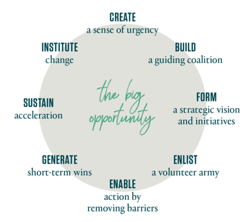
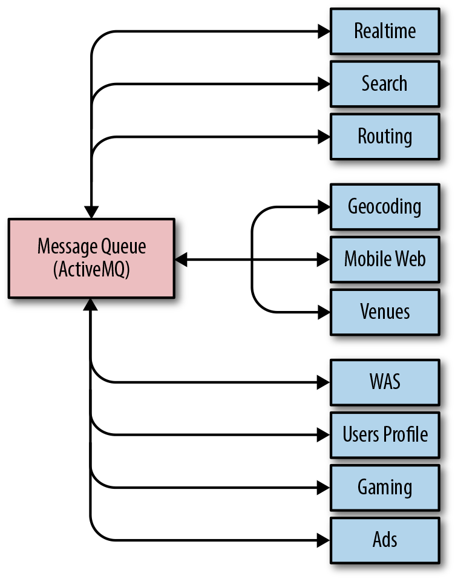
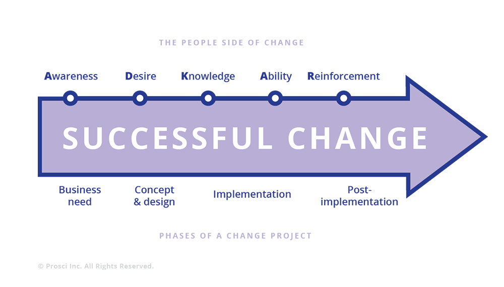

在第一本 SRE 图书的引言中，Ben Treynor Sloss 把 SRE 团队描述为“以快速创新和高度接纳变化为特征”，并将组织变革管理列为 SRE 团队的核心职责。本章探讨如何在 SRE 团队中把理论付诸实践。我们会先回顾几种重要的变革管理理论，再通过两个案例研究，具体说明不同风格的变革管理如何在 Google 落地。
请注意，变更管理一词有两种含义：组织变革管理和变更控制。本章所说的变革管理，是指为个人、团队和业务部门实施组织变革做好准备并提供支持的各种方法的统称。我们不讨论项目管理语境下的这个术语；在该语境中，它可能指变更评审、版本控制等变更控制流程。
2,000 多年前，希腊哲学家赫拉克利特就说过，唯一不变的就是变化。这条格言至今依然成立，对技术领域尤其如此，对迅速演进的互联网和云计算领域更是如此。
产品团队的使命是打造产品、发布功能并让客户满意。在 Google，大多数变化节奏很快，遵循“先发布、再迭代”的方式。落实这类变化通常需要跨系统、跨产品，并在分布于全球的团队之间协调。站点可靠性工程师经常身处这一复杂且瞬息万变的环境中心，负责在变化固有的风险与产品的可靠性和可用性之间取得平衡。错误预算（参见第 2 章）是实现这种平衡的主要机制。
自 Kurt Lewin 在 1940 年代奠定该领域的基础以来，变革管理作为一门研究和实践领域不断发展。相关理论主要致力于建立管理组织变革的框架。深入分析具体理论超出了本书范围，但为了把这些理论置于 SRE 语境之中，我们会简要介绍几种常见理论，以及它们各自可能如何适用于 SRE 类型的组织。Google SRE 并没有采用这些理论框架所隐含的正式流程，不过，从这些框架的视角审视 SRE 活动，确实帮助我们改进了变革管理方法。随后，我们将介绍几个案例，说明其中一些理论要素如何应用于 Google SRE 主导的变革管理活动。
Kurt Lewin 用于管理变革的“解冻—变革—再冻结”模型，是这一领域相关理论中历史最悠久的。这个简明的三阶段模型可用于管理流程评审及其引发的群体动力变化。阶段 1 要让群体相信变革确有必要；当群体愿意接受变革理念后，阶段 2 便实施变革；最后，在变革大体完成时，阶段 3 把新的行为和思维模式制度化。该模型的核心原则把群体视为主要的动态载体，并主张：群体在规划、实施和完成任何一段变革过程时，都应把个人与群体的互动作为一个系统来考察。因此，Lewin 的研究最适合用于从宏观层面规划组织变革。
McKinsey 的七个 S 分别代表结构（structure）、战略（strategy）、系统（systems）、技能（skills）、风格（style）、人员（staff）和共同价值观（shared values）。与 Lewin 的研究相似，这套框架也是规划组织变革的工具集。Lewin 的框架较为通用，而 7-S 则明确以提高组织效能为目标。应用这两种理论，都要先分析当前的目标与流程。不过，7-S 还明确涵盖业务要素（结构、战略和系统）与人员管理要素（共同价值观、技能、风格和人员）。对于考虑从传统系统管理重心转向更全面的站点可靠性工程方法的团队，这个模型可能很有帮助。
《时代》杂志把 John P. Kotter 于 1996 年出版的《领导变革》（哈佛商学院出版社）评为史上最具影响力的 25 本商业管理图书之一。图 21-1展示了 Kotter 变革管理流程的八个步骤。

Kotter 的流程尤其适用于 SRE 团队和组织，不过有一个小例外：很多时候（例如后面的 Waze 案例），并不需要特意营造紧迫感。为高速增长的产品和系统提供支持时，SRE 团队经常面对迫在眉睫的扩展性、可靠性和运维挑战。系统组件通常归多个开发团队所有，而这些团队可能横跨数个组织单元；扩展问题还可能需要从物理基础设施到产品管理等不同团队协同处理。问题发生时，SRE 往往身处第一线，因此有格外强烈的动力来领导必要的变革，确保产品 24/7/365 保持可用。为了让所支持的产品持续可用，SRE 的许多工作都在不言明的情况下采用了 Kotter 流程。
Prosci ADKAR 模型注重在变革管理中兼顾业务与人员两个方面。ADKAR 是个人要使组织变革成功而必须达成的五项目标的英文首字母缩写：认知（awareness）、意愿（desire）、知识（knowledge）、能力（ability）和强化（reinforcement）。
原则上，ADKAR 提供了一套实用、周到且以人为本的框架。然而，它对 SRE 的适用性有限，因为运维职责经常带来很大的时间压力。依次迭代推进 ADKAR 各阶段，并提供必要的培训或辅导，需要控制节奏并投入大量沟通；对于分布在全球、以运维为重心的团队而言，这很难做到。尽管如此，Google 已经成功运用 ADKAR 风格的流程来介绍高层次变革并争取支持。例如，向 SRE 管理团队推行全球性组织变革，同时保留各地对实施细节的自主权。
Bridges 转变模型描述了人们面对变化时的情绪反应。对人员管理者而言，它是一种实用的管理工具，但并不是变革管理的框架或流程。类似地，Kübler-Ross 变化曲线描述了人们面对变化时可能经历的一系列情绪。该曲线源自 Elisabeth Kübler-Ross 对死亡与临终的研究，1后来被用于理解和预判员工对组织变革的反应。这两种模型都有助于在变革期间维持员工的高生产力，因为心情不佳的人很少能保持高效。
Waze 是一款基于社区的导航应用，于 2013 年被 Google 收购。收购之后，Waze 的活跃用户、工程人员和计算基础设施都进入显著增长期，但它在 Google 内部仍保持相对独立的运营方式。增长带来了许多技术和组织层面的挑战。
由于 Waze 保持自主性并秉承创业公司精神，它选择由小规模工程师团队自下而上地从技术层面应对这些挑战，而不是采用上一节正式模型所设想的、由管理层主导的结构化组织变革。尽管如此，它在整个组织和基础设施中推广变革的方法，与 Kotter 的变革管理模型非常相似。本案例把 Kotter 流程追溯应用于既有事件，考察它如何恰当地描述 Waze 被收购后在成长过程中经历的一系列技术和组织挑战。
Kotter 模型以紧迫感开启变革周期。当 Waze 的消息队列系统可靠性严重下降、故障变得日益频繁且影响越来越大时，Waze SRE 团队必须迅速、果断地采取行动。如图 21-2所示，消息队列系统对业务运行至关重要，因为 Waze 的每个组件（实时服务、地理编码、路线规划等）都依靠它与其他内部组件通信。

随着消息队列吞吐量大幅增长，系统根本无法承受不断增加的需求。为了维持系统稳定，SRE 不得不以越来越短的间隔进行人工干预。情况最糟时，整个 Waze SRE 团队在两周中的大部分时间里 24/7 不停地救火，最后甚至只能每小时重启消息队列的某些组件，才能保证消息继续流动，不影响数千万用户。
由于 SRE 还负责构建和发布 Waze 的全部软件，这些运维负担明显拖慢了功能开发速度：当 SRE 把全部时间都用来救火时，几乎无暇支持新功能上线。工程师通过说明事态的严重性，说服 Waze 领导层重新评估优先级，并投入一部分工程时间开展可靠性工作。两名 SRE 与一名高级工程师组成了一个引导联盟，共同形成一项战略愿景：将来不再需要 SRE 靠重复性劳动维持消息流动。这个小组评估了现成的消息队列产品，但很快认定，只有定制开发的解决方案才能满足 Waze 的扩展性和可靠性要求。
如果无法在研发期间维持现有系统运行，内部开发这套消息队列就无从谈起。这个联盟从当前消息队列的使用团队中召集了一支开发者志愿军，从而消除了这项行动障碍。每个团队都检查自己服务的代码库，寻找减少消息发送量的方法。删减不必要的消息，并在旧队列之上部署压缩层，减轻了部分系统负载。另有一个组件产生了超过 30% 的系统流量，团队为它单独构建专用消息队列，又争取到了一些运维喘息空间。这些措施带来的暂时缓解已经足够，使团队获得两个月的窗口期，用于组装和测试新消息系统的原型。
迁移一套每秒处理数万条消息的消息队列系统，即使没有服务濒临崩溃的压力，也是一项艰巨任务。不过，逐步减轻旧系统的负载可以缓解部分压力，让团队有更长的时间窗口完成迁移。为此，Waze SRE 重构了消息队列客户端库，使其能够通过任一系统或同时通过两个系统发送和接收消息，并使用集中式控制面切换流量。
新系统得到验证后，SRE 开始迁移的第一阶段：他们找出了一些流量较低但重要性很高、消息中断会造成灾难性后果的消息流。让这些消息流同时写入两个消息系统，就能提供一条备用路径。此后曾有几次险些发生故障：旧系统失灵时，备用路径维持了 Waze 核心服务的运行。这些短期成果证明了初期投入是值得的。
要大规模迁移到新系统，SRE 必须与使用该系统的团队密切合作。他们既要弄清如何最好地支持各团队的用例，也要协调流量切换。随着 SRE 团队将流量迁移流程自动化，而且新系统默认支持的用例越来越多，迁移速度也显著加快。
Kotter 的变革管理流程以将变革制度化收尾。最终，新系统的采用积累了足够的势头，SRE 团队得以宣布弃用旧系统并停止支持。又过了几个季度，他们才迁移完最后一批迟迟未迁移的用户。如今，新系统处理的负载已超过旧系统的 1000 倍，持续支持和维护几乎不需要 SRE 人工干预。
把变革过程视为一个周期，是 Kotter 的关键洞见之一。对于 SRE 面对的技术变革，这种有意义变革的周期性尤其明显。消除系统中的一个瓶颈，往往会让另一个瓶颈显现出来。每完成一轮变革，由此实现的改进、标准化和自动化都会释放工程时间。工程团队于是有余力更仔细地审视系统、发现更多痛点，并触发下一轮变革。
当 Waze SRE 终于能从消息系统的救火工作中抽身时，一个新瓶颈出现了，并带来了新的紧迫感：发布工作完全由 SRE 负责，已经明显且严重地妨碍开发速度。发布流程依赖人工操作，占用了 SRE 大量时间。雪上加霜的是，系统组件规模庞大，而发布成本又很高，因此发布频率相对较低。结果，每次发布都包含大量变更，重大缺陷迫使系统回滚的可能性随之显著上升。
Waze SRE 起初并没有一份完整的总体计划，因此发布流程是逐步得到改进的。为了缩小系统组件，使团队可以更快地分别迭代，一名 Waze 高级开发者创建了一个用于构建微服务的框架。它提供了一个标准的“开箱即用”平台，让工程组织可以轻松着手拆分组件。SRE 与这名开发者合作，在框架中加入了一些以可靠性为重点的功能，例如统一的控制面，以及一组便于自动化的行为。这样一来，SRE 就能开发一套工具，接管发布流程中原本成本高昂的环节。其中一项工具把创建新微服务所需的全部步骤与框架捆绑起来，以此激励用户采用。
这些工具起初只是为解燃眉之急而快速做成的简陋版本——最初的原型由一名 SRE 在几天内完成。随着团队从原有组件中拆分出越来越多的微服务，SRE 所开发工具的价值很快就在整个组织中显现出来。SRE 把精简后的组件送入生产环境所花的时间减少了，新微服务单独发布的成本也低得多。
尽管发布流程已经大为改善，但新微服务不断增加，SRE 的总体负担仍令人担忧。在发布工作变得更轻松之前，工程领导层不愿接手发布流程的责任。
为此，一小群 SRE 和开发者组成联盟，勾勒出一项战略愿景：使用 Spinnaker 转向持续部署策略。Spinnaker 是一个开源的多云持续交付平台，用于构建和执行部署工作流。启动工具节省下来的时间，使团队得以构建这套新系统，实现数百乃至数千个微服务的一键构建和部署。新系统在技术上处处优于旧系统，但 SRE 仍然无法说服开发团队改用它。这种抗拒源于两个因素：一是开发团队必须亲自把版本推入生产环境，这显然缺乏吸引力；二是发布流程透明度不足，引发了对变化的排斥。
Waze SRE 通过展示新流程如何创造价值，拆除了这些采用障碍。团队构建了一个集中式信息中心，用于显示二进制文件的发布状态，以及微服务框架导出的多项标准指标。开发团队可以轻松把发布与这些指标的变化联系起来，从而确信部署取得了成功。SRE 与几个自愿参与、偏系统方向的开发团队密切合作，把服务迁移到 Spinnaker。这些成果证明，新系统不仅能满足需求，还能提供原发布流程之外的额外价值。至此，工程领导层制定目标，要求所有团队都使用新的 Spinnaker 部署流水线进行发布。
为推动迁移，Waze SRE 面向整个组织开展 Spinnaker 培训，并为需求复杂的团队提供咨询。当早期采用者熟悉新系统后，他们的积极体验引发了加速采用的连锁反应。他们发现，新流程比等待 SRE 推送版本更快，也更省事。此时，工程师开始向尚未迁移的依赖方施压，因为阻碍开发提速的已经是这些依赖方，而不再是 SRE 团队！
如今，Waze 超过 95% 的服务都使用 Spinnaker 持续部署，只需极少的人工参与即可把变更推入生产环境。Spinnaker 并非适合所有情形的万能方案，但如果新服务是用微服务框架构建的，配置发布流水线便轻而易举，因此新服务有很强的动力统一采用这套方案。
Waze 消除技术变革瓶颈的经历，为其他尝试由工程团队推动技术或组织变革的团队提供了许多有益经验。首先，研究变革管理理论绝不是浪费时间！透过 Kotter 流程审视这段开发和迁移过程，可以看出该模型确实适用。如果当时更正式地应用 Kotter 模型，本可帮助团队简化并引导变革过程。
自下而上发起的变革，需要 SRE 与开发团队密切合作，也需要高管层的支持。建立一个规模小、目标明确，并由组织各方——SRE、开发者和管理者——共同参与的小组，是团队成功的关键。要把变革制度化，同样离不开这种协作。随着时间推移，这些临时小组可以也应当演变为更加正式、结构化的合作机制：让 SRE 自然参与设计讨论，并在整个产品生命周期中，就如何在生产环境构建和部署稳健的应用提供最佳实践建议。
渐进式变革要容易管理得多。一步到位地跳向“完美”方案，跨度实在太大（更不用说，如果系统已濒临崩溃，这大概根本不可行）；而且随着变革过程中出现新信息，人们对“完美”的定义也很可能发生变化。迭代式方法可以尽早展示成果，帮助组织认同变革愿景，并证明继续投入的合理性。反过来，如果早期迭代未能体现价值，当你不得不放弃变革时，浪费的时间和资源也会更少。渐进式变革不会一次完成，因此总体规划极其宝贵。应从宏观层面说明目标，保持灵活，并确保每次迭代都朝目标迈进。
最后，现有解决方案有时无法支撑战略愿景提出的要求。构建新系统的工程成本很高，但如果项目能帮助你跳出局部最优，并支持长期增长，这笔投入就可能物有所值。不妨做一个思想实验：设想未来几年业务和组织增长时，系统和工具中可能出现哪些瓶颈。如果你怀疑某些部分无法水平扩展，或者其资源需求相对于日活跃用户数等核心业务指标呈超线性增长（甚至指数增长），就可能需要考虑重新设计或替换它们。
Waze 开发新内部消息队列系统的经历表明，一小群意志坚定的工程师完全可以将变革制度化，从而切实提升服务可靠性。把 Kotter 模型映射到这次变革上可以看到，即使组织规模很小、由工程团队主导，对变革管理策略稍加考虑也能提供一套成功路径。下一个案例同样说明，当变革推动技术和流程标准化时，整个组织都能获得可观的效率提升。
对于可以、也应该使用哪些软件管理生产环境，SRE 通常有明确而坚定的看法。多年的经验、对成败得失的观察，以及通过事后总结审视历史，让 SRE 积累了深厚的背景知识和敏锐的直觉。明确软件需求、构建并实施软件，通过自动化消除眼下的手工工作，是 SRE 的核心价值观。近来，Google SRE 尤其把精力集中在横向通用软件上。当足够多的用户和开发者采用同一套解决方案时，就会形成良性循环，并减少重复造轮子。原本可能没有交集的团队，也会共享由同一软件自动落实的实践和政策。
本案例源于一次组织演进，而不是对系统扩展或可靠性问题的响应（后者见 Waze 案例）。因此，Prosci ADKAR 模型（见图 21-3）比 Kotter 模型更为适合，因为它在变革期间既考虑明确的组织和人员管理特征，也考虑技术因素。

几年前，Google SRE 发现，自己在监控、发布与上线、事件响应、容量管理等多个问题领域中，针对大致相同的问题使用了多套彼此独立的软件解决方案。
形成这种局面的部分原因是，为 SRE 构建工具的人脱离了用户及其需求。工具开发者未必总能掌握问题的最新情况和整个生产环境的全貌——几乎每天都有新软件、新硬件和新用例投入使用，生产环境会随之迅速发生新的变化。此外，工具使用者各不相同，需求有时甚至完全正交（例如，“这次上线必须快，大致正确即可”与“这次上线必须 100% 正确，慢一点没关系”）。
结果，这些长期项目没有一个能完全满足任何一方的需求，而且各项目的开发投入、功能完整度和持续支持水平参差不齐。等待“大一统”用例的人，盼着未来出现一套没有明确边界、无所不能的解决方案，却久等不至，最终失去耐心，转而运用自己的软件工程能力打造小众专用方案。需求较小且具体的团队，则不愿采用覆盖面更广、却不够贴合自身需求的方案。更通用的解决方案在长期、技术和组织层面的好处显而易见，但客户、服务和团队既没有专门人力，也不会因为等待而得到奖励。更复杂的是，无论大型还是小型客户团队，其需求都会随时间改变。
为了把这个场景限定为一个具体的问题领域，我们问自己：如果所有 Google SRE 都能使用一套通用的监控引擎和一组信息中心，会怎么样？它们应当易于使用，无需定制即可支持各种各样的用例。
同样的思路也可以扩展到发布与上线、事件响应、容量管理等领域。如果产品的初始配置能够广泛吸收各种方法，满足我们的大多数功能需求，那么经过一段时间，通用且充分考虑实际情况的解决方案就会成为必然选择。到某个阶段，与生产环境打交道的工程师达到临界规模，他们会发现原有方案已无法满足需求，并主动迁移到一套通用、支持完善的工具和自动化体系，放弃自建工具及其附带的维护成本。
Google SRE 很幸运，许多工程师都具备软件工程背景和经验。自然的第一步似乎是：鼓励那些精通具体问题并有鲜明见解的工程师——其专长从负载均衡、上线工具到事件管理与响应不等——基于共同的长期愿景自愿组成虚拟团队。这些工程师会把愿景转化为真正可用的软件，最终先由整个 SRE 采用，再推广到整个 Google，成为生产环境的基础功能。
回到 ADKAR 变革管理模型，目前讨论的步骤——发现问题并认识到机会——正是 ADKAR 起始阶段“认知”的典型例子。Google SRE 领导团队认同这一需求，具备变革意愿，同时拥有足够的知识和能力，因此很快就进入了解决方案设计阶段。
我们的第一项任务，是就若干公认的核心主题达成一致。这些主题如果拥有统一愿景，将会大有裨益；我们的目标是交付适合大多数用例的解决方案和采用计划。我们从一份包含超过 65 个候选项目的清单出发，用数月时间收集客户需求、核实路线图并开展市场分析，最终把工作范围缩小到少数经过验证的主题。
最初的设计是围绕这些主题组建一支 SRE 专家虚拟团队。成员要把相当大的一部分时间——约 80%——投入这些横向项目。采用 80% 时间和虚拟团队的设想，是为了确保我们始终与生产环境保持接触，不会脱离实际去设计或构建解决方案。然而，我们发现这种方法存在几个痛点，这或许并不出人意料：
协调虚拟团队非常困难：团队横跨多个时区，成员还要定期值班，注意力不断被打断。在运行服务与构建一套真正成熟的软件之间切换时，需要转换大量工作上下文。
由于没有统一的办公地点和共同工作时间，从凝聚共识到代码评审，各项工作都受到影响。
横向项目最初所需的人员只能从现有团队抽调，导致这些团队能够投入自身项目的工程资源减少。即使在 Google，把人员分配给维持现有系统，还是分配给建设面向未来的基础设施，两者之间也存在矛盾。
掌握足够的数据后，我们意识到必须重新设计方法，最终选择了更为熟悉的集中式模型。最重要的变化，是取消团队成员按 80/20 比例在项目工作和值班职责之间分配时间的要求。如今，大多数 SRE 软件开发工作都由高级工程师组成的小组承担；他们拥有丰富的值班经验，但能够专心根据这些经验构建软件。我们还通过招聘或调动工程师，让许多团队在物理地点上集中办公。对于小组开发（6～10 人），大家同处一室确实效率更高（不过，这一结论并不适用于所有团队，例如远程 SRE 团队）。我们仍可通过视频会议、电子邮件和传统的出差走访，从整个 Google 工程组织收集需求和观点。
因此，设计演进最终回到了一个熟悉的形态：规模小、行动敏捷、成员大多在同一地点、推进迅速的团队。不过，我们额外强调，要选择并构建能被 60% Google 工程师采用的自动化方案和工具；我们认为，这一比例可以合理诠释“Google 中几乎所有人”这一目标。所谓成功，就是 Google 的大多数团队都在使用 SRE 构建的成果来管理生产环境。
ADKAR 模型把变革项目的实施阶段置于以人为中心的知识与能力阶段之间。这个案例印证了这种对应关系。我们拥有许多积极投入、才华出众且知识丰富的工程师，但我们要求这些原本专注于 SRE 事务的人像产品软件开发工程师一样工作，关注客户需求、产品路线图和交付承诺。我们需要重新审视这次变革的实施方式，让工程师能够展现这些新方面所要求的能力。
再回到上一节提到的监控领域。第一本 SRE 图书的第 31 章介绍了 Viceroy 如何解决各团队使用不同定制方案的问题。Viceroy 是 Google SRE 为所有人创建一套通用监控信息中心解决方案的尝试。最初版本由多个 SRE 团队共同创建和运行；随着 Viceroy 逐渐成为 Google 事实上的监控和信息中心解决方案，一支专门的集中式 SRE 开发团队接手了该项目。
然而，即使 Viceroy 用一套通用框架统一了 SRE，各团队仍要为自己的服务构建复杂的定制信息中心，造成大量重复劳动。Viceroy 虽然提供了一种标准的托管方式来设计和构建数据可视化界面，但每个团队仍须自行决定展示哪些数据以及如何组织这些数据。
此时已经集中办公的软件开发团队又启动了一项并行工作，用于提供通用信息中心：他们在底层“定制”系统之上构建了一套带有明确设计取向的零配置系统。该系统假定服务采用少数几种常见组织方式之一，并据此提供一套标准、全面的监控视图。随着时间推移，大多数服务都迁移到这些标准信息中心，不再投入资源开发定制布局。规模非常大、具有独特性或存在其他特殊需求的服务，仍可按需在托管系统中部署定制视图。
再从 ADKAR 模型来看，Google 监控工具的整合最初是一项自下而上的工作，由此带来的运维效率提升为启动更广泛的行动提供了可量化的依据，也就是认知和意愿：SRE 自行投入资源组建软件开发团队，为整个 Google 构建生产管理工具。
为彼此依赖的组件设计迁移方案，通常比从零开始设计更加复杂。但在现实中，最艰难的工程工作往往是：在不干扰众多客户所依赖的运行中服务的前提下，把大量小型或受限的系统逐步演进为数量更少、适用范围更广的系统。与此同时，现有系统旁边还会不断增加新的小系统，其中一些最终会出人意料地成长为大型系统。从宏大的全新设计出发，再逐步加入那些确有必要的约束，在思想上颇具吸引力；但事实证明，系统和团队的迁移才是最为艰难的工作。
设计横向通用软件，需要大量听取潜在最终用户的意见；从许多方面看，构建和推广采用的工作很像产品经理的职责。为了让这项工作取得成功，我们必须确保充分理解各种优先事项，并妥善排定它们的先后顺序。满足客户——包括 SRE 和其他生产环境用户——的需求，也是成功的关键要素。必须承认，向通用工具迈进的工作仍在进行之中。为了更好地满足客户需求，我们反复调整共享技术开发团队的结构和人员配置，并引入产品管理和用户体验人才，以补足欠缺的知识。
在过去一两年中，我们看到 Google 许多团队开始采用这些由 SRE 设计和构建的产品。我们认识到，要想成功，从陈旧、割裂但专业化的方案迁移出去，其成本相对于新通用方案带来的净收益必须足够低。否则，迁移本身就会成为采用障碍。我们继续与构建这些产品的各个团队合作，强化必要的行为，让团队交付的通用方案真正使客户满意。
我们在多个横向软件开发项目中发现了一个共同主题：无论新软件和新产品有多优秀，从已经能用的方案迁移到新方案，其成本总会被认为非常高。更容易管理、无需掌握过多专门知识固然很有吸引力，但离开熟悉的系统——尽管它毛病不少、还伴随许多重复劳动——通常仍会因迁移成本而受阻。此外，工程师个人心里也常有类似想法：“我并没有改进或改变系统，只是把一个能用的组件换成另一个能用的组件。”ADKAR 把这种阻力称为“从知识到能力的差距”。从人的角度看，要认识并接受变化，人们需要时间、辅导，以及新工具和新技能培训。从技术角度看，实施变革必须理解采用成本，并把降低这些成本的工作纳入发布流程。
因此，迁移成本必须接近于零（“只要重新编译，就能用上新的 $thing”），而且对团队、个人和公司而言，收益都必须清晰可见（“现在你不会再受 $foo 漏洞影响了”）。
过去，SRE 经常以“尽力而为”的方式承诺开发产品，也就是说，只能从其他各项工作（管理主要服务、容量规划、处理故障等）的空隙中挤出时间投入产品。因此，我们的执行并不可靠，无法预测某项功能或服务何时可用。产品使用者也就不太信任最终成果，因为项目似乎永远在延期，负责的产品经理和工程师个人也不断轮换。SRE 个人或团队为自己构建工具时，关注的是解决个别问题，降低为所支持系统维持 SLO 的成本。但当我们努力为 Google 的大多数用例构建通用工具时，就必须把重心转向以产品采用率衡量这项工作的成败。
由于我们的组织文化和充足资源，我们采取了自下而上、而非自上而下的方式推进这个项目。我们没有强制用户迁移到新的监控系统，而是通过证明新方案优于现有方案来争取用户。
随着时间推移，我们认识到，开发过程的开展方式会影响潜在内部用户对最终成果的看法。只有让具备生产经验的工程师 100% 投入软件构建，并采用与 Google 其他软件开发工作相同的进度安排和支持机制，这些项目才真正获得推动力。以透明、稳定且如钟表般可预期的方式构建通用软件，并保持出色沟通（“我们会在 Y 日期前完成 X”），大幅加快了向新系统迁移的速度。人们从早期就能看到新系统如何开发，因此在系统完成前便已建立信任。事实证明，人们对“香肠制作过程”的观感，比我们一开始预料的更重要。我们最初以为，“只要做出优秀的产品，人们自然会蜂拥而至”，事实却并非如此。项目必须定义清晰、提前充分宣传、针对大量用户场景进行评估（先瞄准最挑剔的采用者），比现有方案好出许多，而且几乎无需费力就能采用。
通用工具的使用者越多、采用范围越广，实际需要花在编写代码以外事务上的时间就越多。事后看来，这或许显而易见，但明确的最终目标、可信的时间点、定期更新，以及与使用者持续保持联系都至关重要。持怀疑态度的使用者常会问：“我现在这个一次性的 shell 脚本用得还行，真的需要新工具吗？”推广通用软件或流程，与把可靠性作为一项功能十分相似：你可能构建了世上最好的东西，但如果没人采用（或者它不可靠，导致人们无法使用），它对谁都没有用。对于构建和采用通用工具与实践，制定一套采用计划既是最终目标，也是工作的起点。这份计划应涵盖倡导者、Beta 测试者、高管赞助者，以及理解尽量降低采用障碍之重要性的专职工程师。
这是因为采用会产生网络效应：通用软件工具的规模和覆盖范围越大，对这些工具所做的增量改进为组织创造的价值就越高。工具价值提高后，投入其中的开发力量通常也会增加。其中一部分开发工作自然会用于进一步降低迁移成本，从而激励更多人采用。广泛采用会推动组织以一致、产品化的方式实施全组织改进，也让配备完整团队长期支持这些工具变得合理。这些工具应具备快速开发、功能稳定、统一控制面和可自动化 API 等特征。
衡量这类工作的影响时，可以提出以下问题：
一名新加入的产品开发者能以多快的速度构建和管理全球规模的服务？
借助通用工具和实践，一个领域的 SRE 能多轻松地转到另一个领域？
借助同一套基础构件，能把多少服务作为端到端用户体验来统一管理，而不是将其作为彼此独立的服务分别管理？
1 Elisabeth Kübler-Ross，《论死亡与临终：临终者教给医生、护士、神职人员及其家人的事》（纽约：Scribner，1969）。